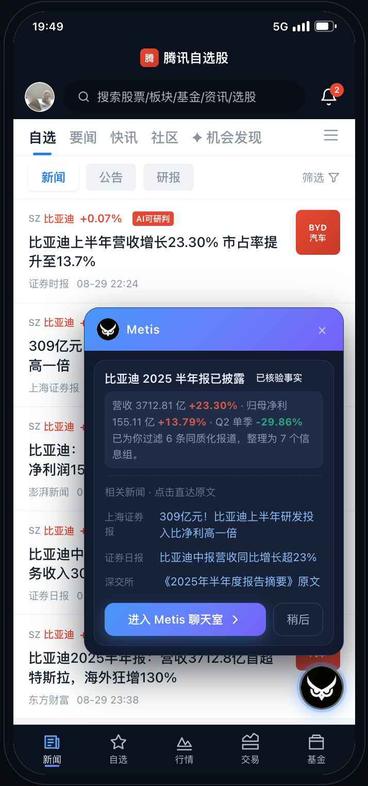
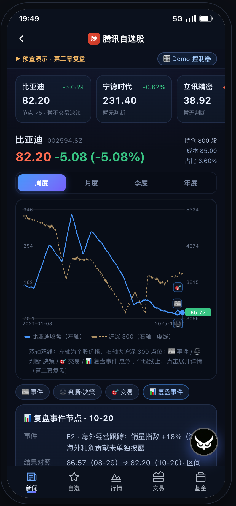
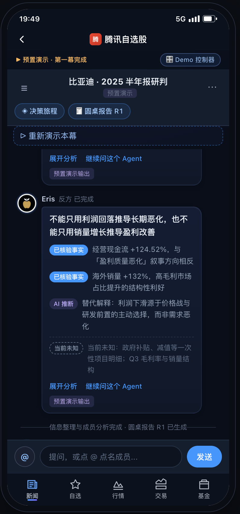

重复消息掩盖有效证据
同一条公告被多次转述，事实、观点与情绪混在一起。阅读量增加，却难以判断信息有没有增量。
Metis · AI 投研助手
将分散的市场消息组织成可检查的证据，再通过多角色研判与追问，帮助用户形成自己的决策，留下可以回看的思考过程。
基于腾讯自选股场景的概念原型 · 当前主流程为预置演示
行情、账户与交易为演示数据，不构成投资建议。



普通投资者的日常投研与决策
产品规则 · AI 工作流 · 交互设计
产品方案 · HTML Demo · 上线前评估方案
概念设计与交互原型
项目面向有交易经验、持续阅读市场信息，但缺少稳定研究框架的普通投资者。设计从三个工作流断点出发：读到的信息如何变成证据，外部分析如何变成自己的选择，以及选择之后如何回看。
同一条公告被多次转述，事实、观点与情绪混在一起。阅读量增加，却难以判断信息有没有增量。
看懂一份分析后，还需要结合自己的持仓、风险约束和主要理由，才能决定下一步怎么做。
交易记录保存成交价格，却未必保存当时的判断。新消息出现时，很难复盘原来的逻辑是否仍成立。
让 AI 串起从证据到行动的过程，
把最终决定与确认权留给用户。
围绕同一事件组织材料、研判和对话，前台保留三种正式卡片：信息整理卡、圆桌报告、个人决策卡。复杂的过程通过聊天状态和决策旅程逐步展开。
归并同源信息，展示重点、冲突和待核验内容。
呈现专业解释、反方证据与未知，汇总为报告。
通过追问澄清判断、行动与理由，由用户确认。
关联判断、决策和成交，等待新事件触发复盘。
用户能看到哪些材料被保留、合并或收起，以及哪些说法仍待核验。处理结果提供回查入口，方便检查 AI 的整理依据。
通过 Eris 反方分析等角色，呈现替代解释与不确定性。圆桌报告保留分歧，帮助用户检查主结论成立的条件。
判断、决策与成交分别保存。用户可以维持判断、选择继续观察；只有实际成交，才新增交易节点。
七个真实原型画面，展示用户如何进入、理解、决策与回看。选择步骤查看对应界面，点击图片可放大阅读。
沿用自选股资讯场景，通过“AI 可研判”标签与助手入口，把阅读新闻自然衔接到事件研究。
保留熟悉的浏览路径，让用户从当前关心的公司与事件出发。
素材来自项目原始截图，保留原型的实际界面与演示标识。01 / 07
Demo 以比亚迪为演示标的，串起一次财报研判与后续经营跟踪。第二幕沿用第一幕的判断、持仓和决策记录，展示新证据如何进入原有决策过程。
从公司半年报与相关材料出发，完成信息整理、Agent 分析和圆桌报告，再进入个人决策。
新的海外经营跟踪事件关联上一轮记录。先回看原判断和结果，再讨论是否需要改变当前行动。
两幕均为预置演示剧情；第二幕事件、账户、行情及交易数据用于验证交互流程。
判断可以维持，
决策仍然需要被重新确认。
将“噪音过滤是否有效、研判是否可信、用户能否完成自己的决策”拆成可检查的任务。评估关注证据和决策过程，短期收益不作为产品有效性的证明。
覆盖财报、重大事件、来源冲突与历史判断等场景。
计划每个事件重复运行 3 次，核对事实、引用和未知。
覆盖虚构来源、状态混淆、请求失败与越权操作。
计划每人完成 2 个任务，观察能否理解并确认个人决策。
以上样本量来自项目《上线前评估方案》，属于待执行的验证设计；本作品集未将其表述为已完成测试或实测结果。当前材料未提供真实用户测试记录、模型质量实测或收益提升数据。
事件、研判、个人判断、决策与成交之间的关系；两幕连续场景中的交互路径；以及将产品质量转化为评估任务和准入门槛的方法。
用户能否理解 AI 研判与本人决策的区别，信息整理是否遗漏重要反证，以及真实模型生成能否在来源、内容和状态上保持一致。现有主流程为预置演示，完整多 Agent 后台与实时数据接入仍需后续验证。
打开 Demo 后，可通过「Demo 控制器」选择第一幕开始、第一幕完成或第二幕复盘。默认预置演示，无需配置 API；建议在桌面浏览器体验。